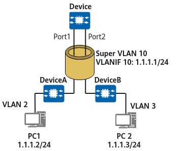
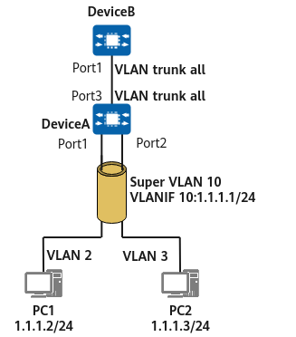
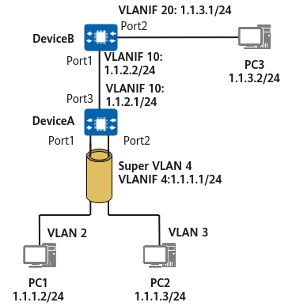

VLAN technology is widely used on switched networks because it can flexibly control broadcast domains and is easy to deploy. Communication between broadcast domains on a Layer 3 device is typically implemented by configuring a Layer 3 logical interface for each VLAN; however, this approach wastes IP addresses. Figure 1 shows a VLAN assignment example on devices.
VLAN |
Subnet |
Gateway Address |
Number of Available IP Addresses |
Number of Available Hosts |
Number of Required IP Addresses |
|---|---|---|---|---|---|
2 |
1.1.1.0/28 |
1.1.1.1 |
14 |
13 |
10 |
3 |
1.1.1.16/29 |
1.1.1.17 |
6 |
5 |
5 |
4 |
1.1.1.24/30 |
1.1.1.25 |
2 |
1 |
1 |
According to Table 1, 10 host addresses are required in VLAN 2. The subnet 1.1.1.0/28 is assigned to VLAN 2, offering a total of 16 host addresses. However, 1.1.1.0 is the subnet number, 1.1.1.1 is the default gateway address, and 1.1.1.15 is the directed broadcast address of the subnet, meaning that there are 13 usable host addresses ranging from 1.1.1.2 to 1.1.1.14. Although only 10 host addresses are required in VLAN 2, 13 IP addresses need to be allocated to it based on subnet division.
Similarly, five host addresses are required in VLAN 3, so the subnet 1.1.1.16/29 is assigned to it. And one host address is required in VLAN 4, so the subnet 1.1.1.24/30 is assigned to it.
The preceding VLANs require 16 addresses (10 + 5 + 1 = 16). However, a minimum of 28 addresses (16 + 8 + 4 = 28) need to be allocated if the common VLAN addressing method is used, wasting nearly half of the allocated addresses. Furthermore, if some of the 10 hosts in VLAN 2 do not go online, the unused IP addresses are wasted because they cannot be allocated to hosts in other VLANs.
In addition to address wastage, this addressing method also makes it difficult to upgrade and expand networks in the future.
To solve the preceding problems and enhance addressing flexibility, VLAN aggregation is developed.
VLAN aggregation technology, also known as super VLAN technology, uses multiple VLANs to isolate broadcast domains on a physical network so that different VLANs belong to the same subnet. It introduces the concepts of super-VLANs and sub-VLANs.
A super-VLAN can contain one or more sub-VLANs that identify different broadcast domains. A sub-VLAN does not occupy an independent subnet. In a super-VLAN, each host is allocated an IP address from the subnet associated with the super-VLAN regardless of which sub-VLAN the host belongs to.
VLAN aggregation allows sub-VLANs to share the same Layer 3 interface, thereby conserving subnet numbers, default gateway addresses, and directed broadcast addresses of subnets. It also allows hosts in different broadcast domains to use IP addresses on the same subnet, thereby eliminating subnet differences, enhancing the addressing flexibility, and reducing wastage of idle IP addresses.
To implement VLAN aggregation on the network shown in Figure 1 and meet the requirements listed in Table 1, create VLAN 10, configure it as a super-VLAN, and assign the subnet 1.1.1.0/24 to it.
1.1.1.0 is the subnet number and 1.1.1.1 is the gateway address of the subnet, as shown in Figure 2. Table 2 lists the address assignments of sub-VLANs (VLAN 2, VLAN 3, and VLAN 4).
VLAN |
Subnet |
Gateway Address |
Number of Available IP Addresses |
Available IP Address |
Number of Required IP Addresses |
|---|---|---|---|---|---|
2 |
1.1.1.0/24 |
1.1.1.1 |
10 |
1.1.1.2-1.1.1.11 |
10 |
3 |
5 |
1.1.1.12-1.1.1.16 |
5 |
||
4 |
1 |
1.1.1.17 |
1 |
In VLAN aggregation, sub-VLANs can belong to the same subnet instead of different subnets, and the required number of IP addresses can be flexibly assigned to hosts in sub-VLANs from the subnet where the super-VLAN belong.
As described in Table 2, VLAN 2, VLAN 3, and VLAN 4 share the same subnet (1.1.1.0/24), default subnet gateway address (1.1.1.1), and directed broadcast address (1.1.1.255) of the subnet. In this way, the IP addresses that are used as subnet numbers (1.1.1.16 and 1.1.1.24), default subnet gateway addresses (1.1.1.17 and 1.1.1.25), and directed broadcast addresses (1.1.1.15, 1.1.1.23, and 1.1.1.27) of subnets in common VLAN mode can be used as host IP addresses.
The three VLANs require a total of 16 addresses (10 + 5 + 1 = 16), and are allocated exactly 16 addresses (1.1.1.2 to 1.1.1.17) on the same subnet. In total, 19 IP addresses are used, including 16 host addresses, one subnet number (1.1.1.0), one default subnet gateway address (1.1.1.1), and one directed broadcast address (1.1.1.255) of the subnet. On the subnet, 236 addresses (255 - 19 = 236) are available and can be used by any host in the sub-VLANs.
Although VLAN aggregation allows different VLANs to use IP addresses on the same subnet, it creates a Layer 3 forwarding problem between sub-VLANs.
In common VLAN mode, hosts in different VLANs can communicate with each other through Layer 3 forwarding by their respective gateways. However, in VLAN aggregation mode, hosts in a super-VLAN use IP addresses on the same network segment and share the same gateway address, whereas hosts in different sub-VLANs belong to the same subnet. As a result, hosts in sub-VLANs can communicate with each other only at Layer 2, but cannot communicate at Layer 3 through the gateway. Furthermore, hosts in different sub-VLANs are isolated at Layer 2, and therefore cannot communicate with each other.
Proxy ARP can be used to solve this problem.
Layer 3 communication between sub-VLANs
For example, a super-VLAN (VLAN 10) contains sub-VLANs (VLAN 2 and VLAN 3), as shown in Figure 3.

The communication process between PC1 in VLAN 2 and PC2 in VLAN 3 is as follows (assuming that PC1's ARP table does not contain PC2's ARP entry, and that proxy ARP between sub-VLANs is enabled on the gateway):
Sending packets from PC2 to PC1 is similar to the preceding process and is not described here.
Layer 2 communication between a sub-VLAN and an external network
In port-based Layer 2 VLAN communication on the network shown in Figure 4, packets sent and received by an interface are not tagged with the super-VLAN ID.

After receiving a frame from PC1 through Port1, DeviceA adds the tag of VLAN 2 to the frame. Even though VLAN 2 is a sub-VLAN of VLAN 10, DeviceA does not change the tag of VLAN 2 to the tag of VLAN 10. When DeviceA sends out the frame from Port3 (which is a trunk interface), the frame still carries the tag of VLAN 2.
DeviceA does not send packets with the tag of VLAN 10. If it receives packets with the tag of VLAN 10, DeviceA discards these packets because it has no physical port belonging to VLAN 10.
If you configure a super-VLAN and then a trunk interface, the super-VLAN is automatically filtered out from the VLANs allowed on the trunk interface.
In Figure 4, Port3 of DeviceA allows packets from all VLANs to pass through, but packets from VLAN 10 (super-VLAN) cannot pass through this port.
If a trunk interface is configured and allows packets from all VLANs to pass through, a super-VLAN cannot be configured on the device. This is because a VLAN that contains a physical port cannot be configured as a super-VLAN.
For DeviceA, only VLAN 2 and VLAN 3 are valid, and all data frames are forwarded in these two VLANs.
Layer 3 communication between a sub-VLAN and an external network
